Productora audiovisual — Santo Domingo, RD
Ideas que se vuelven historias que dejan huella.
Video, postproducción y fotografía para marcas como Wendy’s, Pizza Hut y Häagen-Dazs — y para personas que quieren verse como se sienten.
Marcas y equipos con los que hemos trabajado
- Wendy’s
- Pizza Hut
- Häagen-Dazs
- Banco LAFISE
- Viamar
- Manzanas Washington
- Bodas A La Moda
- By Oriana Lucas
- Hoenn
Trabajo
Proyectos seleccionados
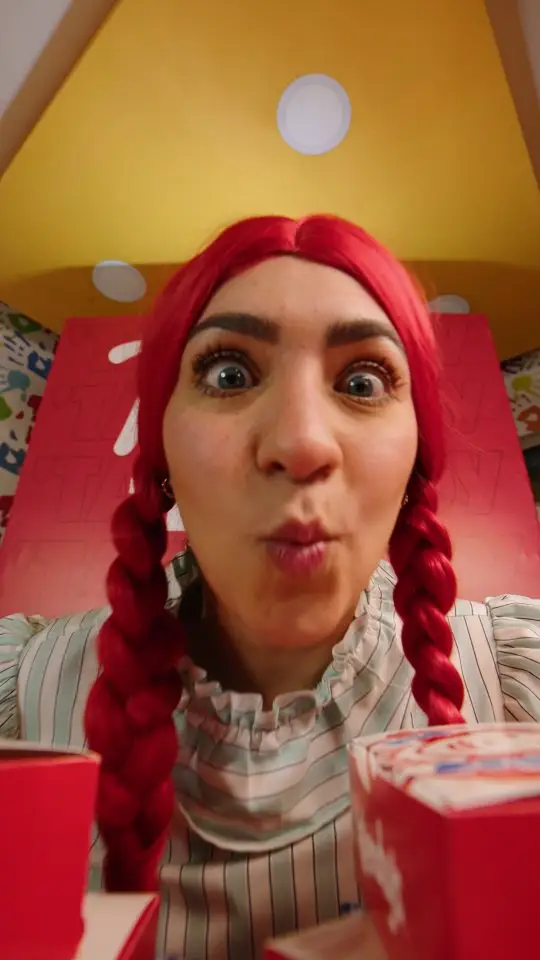
Video Wendy’s — Lanzamiento TendersCobertura de evento · con Hoenn · 2026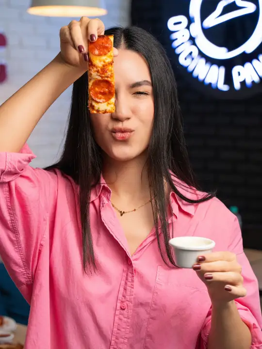
Foto Pizza HutSesión de fotos · con Hoenn · 2025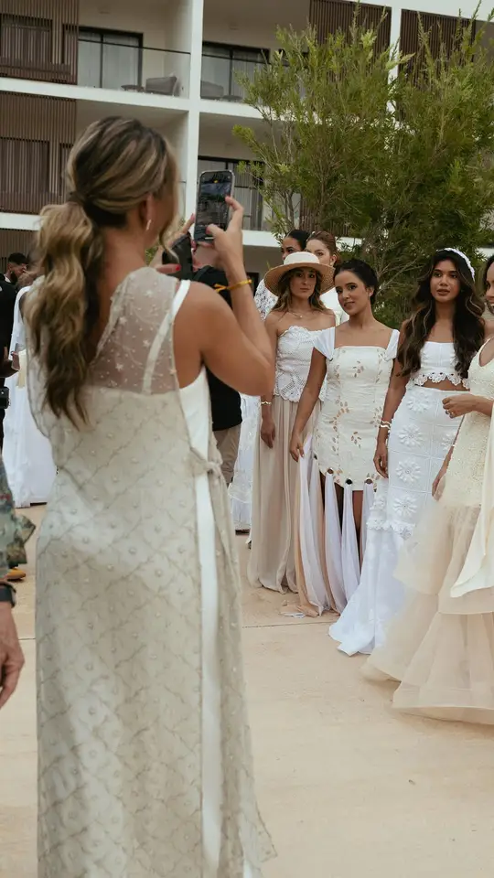
Video By Oriana LucasFashion film · Colección nupcial · 2025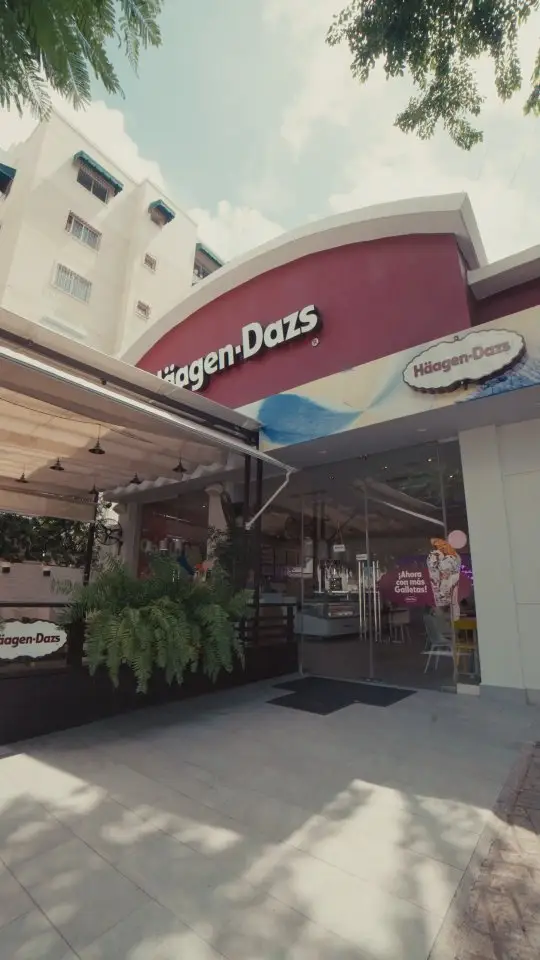
Video Häagen-DazsCobertura Día de los Padres · con Hoenn · 2025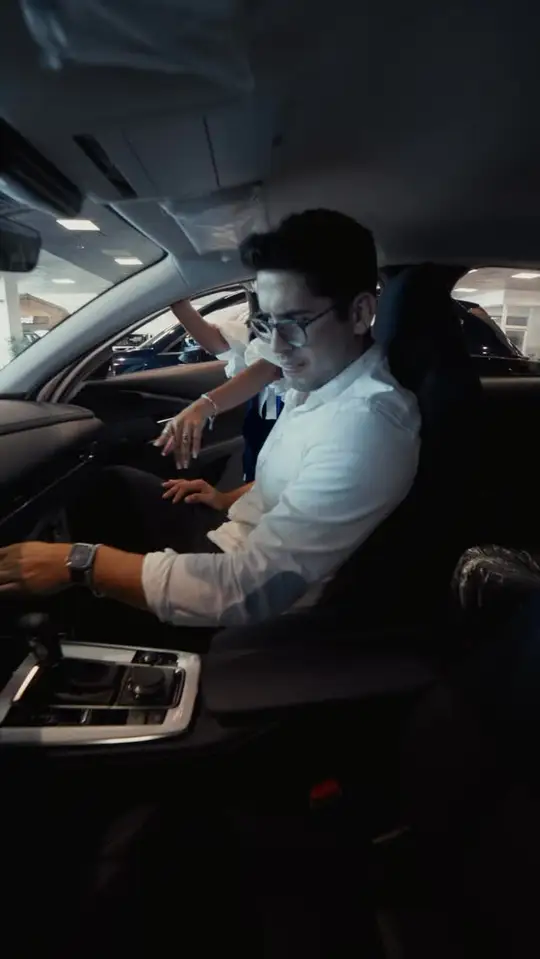
Video Banco LAFISE × ViamarFeria de Vehículos · con Hoenn · 2025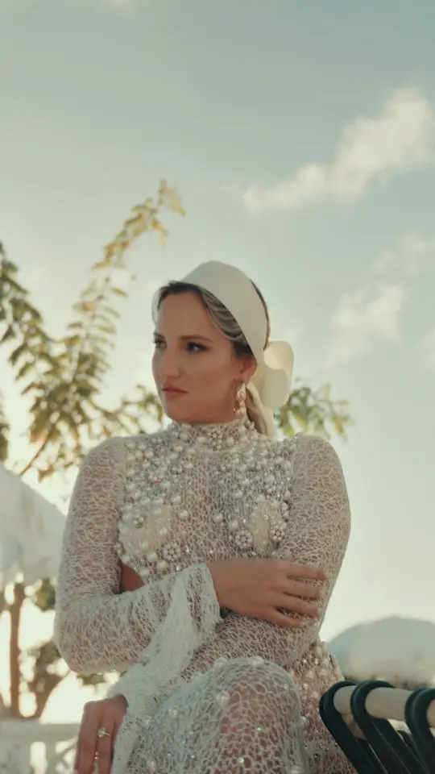
Video Bodas A La Moda — Portada no. 13Video y fotos · Oriana Lucas · Cayo Levantado · 2024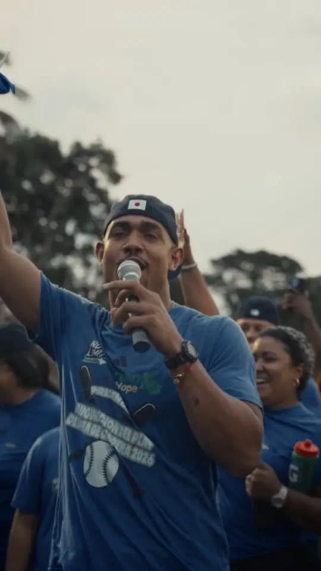
Video Manzanas Washington × Julio RodríguezDocumental · Loma de Cabrera · con Hoenn · 2026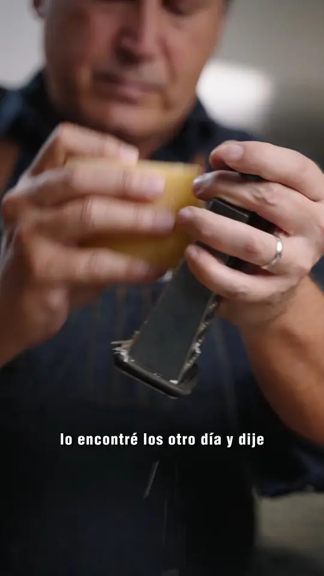
Video Tradiciones ReinventadasIntro de serie · Chef Giancarlo Bonarelli · 2025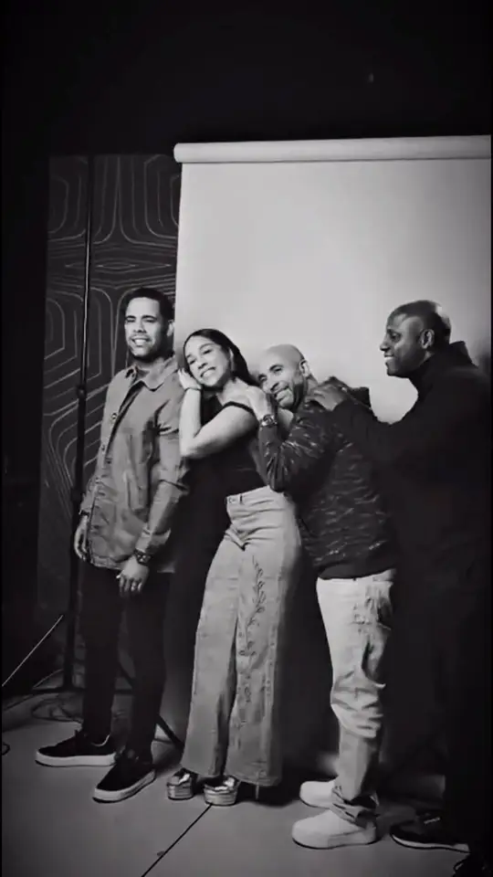
Foto ¡Qué Chévere es Saber!Sesión de fotos · 2025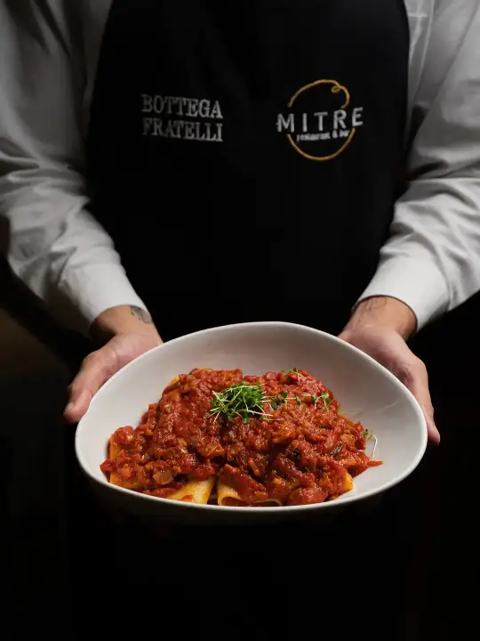
Foto Fotografía gastronómicaIn Frame · 2026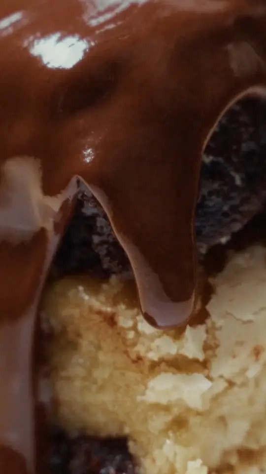
Video Food filmIn Frame · 2025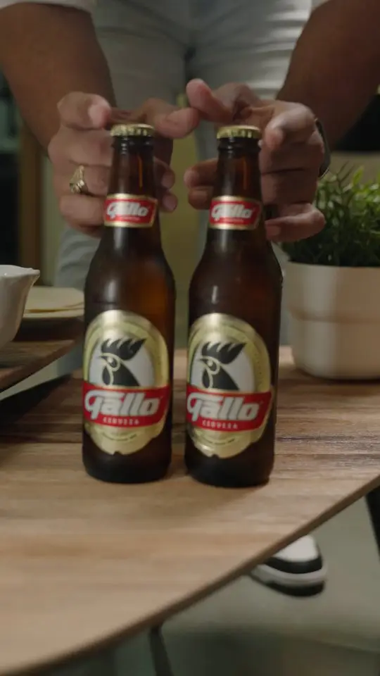
Video Spot de productoCon Miguel R. Corniel y Hoenn · 2025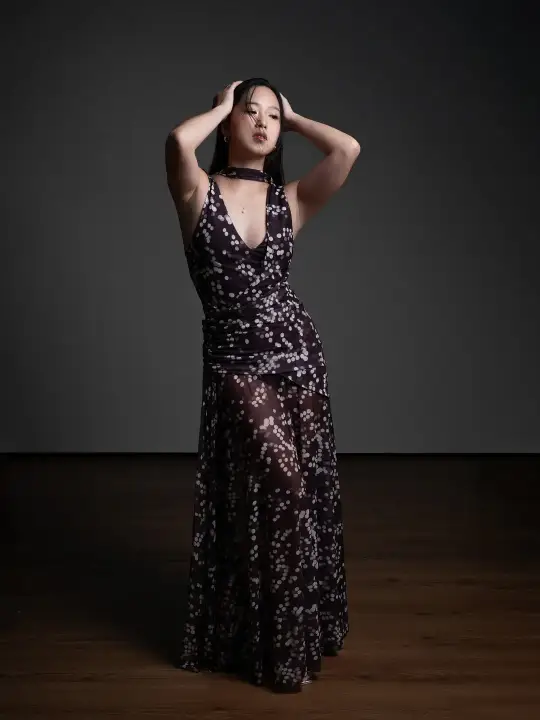
Retrato Retrato editorialModelo @kakeiyang · 2026 Retrato Retrato editorialModelo @evivilla24 · 2026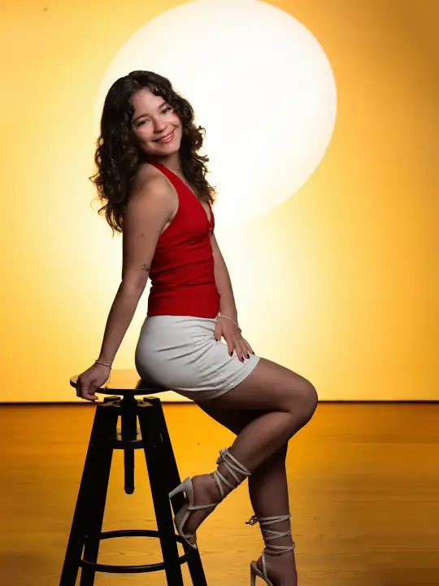
Retrato Retrato en estudioModelo @nicolecueli · 2026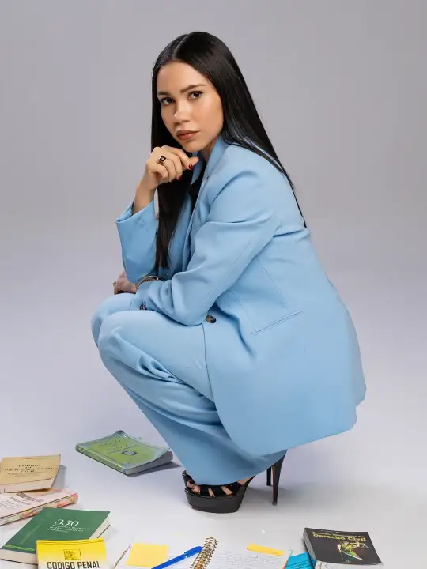
Retrato Retrato en estudioModelo @nataliasanchezlegal · 2026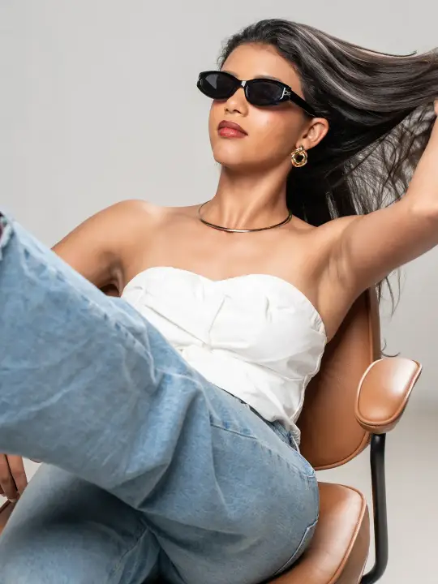
Retrato Retrato editorialModelo @ricicorniel · 2026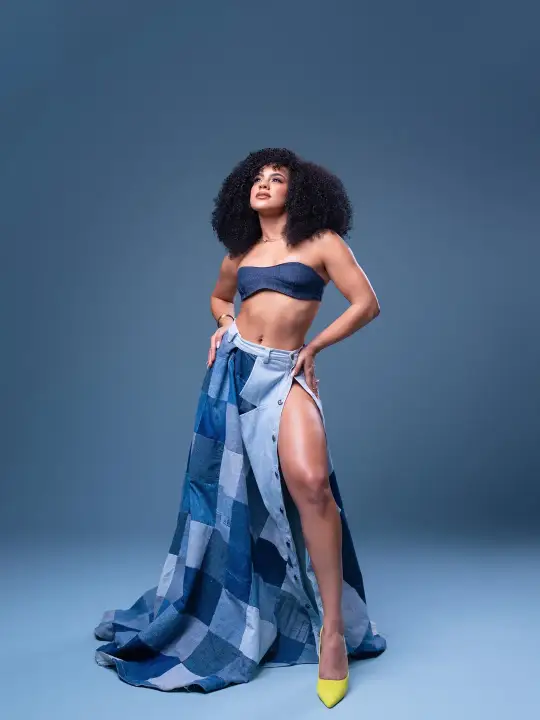
Retrato Retrato editorialModelo @jenvargas_ · 2026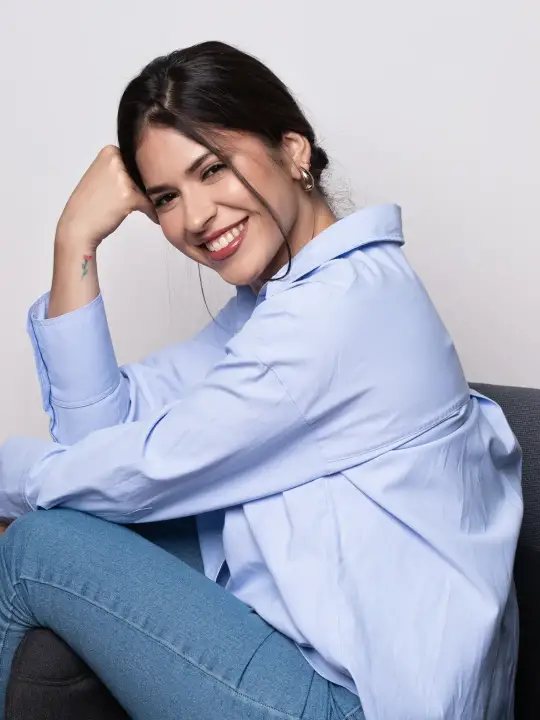
Retrato Retrato en estudioModelo @rdriguez_arias · 2026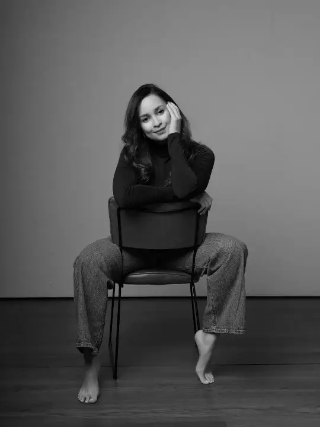
Retrato Retrato en estudioModelo @bessyrodz · 2026Servicios
Del guion al último frame
-
01
Dirección y filmación
Comerciales, lanzamientos de producto, cobertura de eventos y contenido para redes, con una mirada cinematográfica de principio a fin.
-
02
Postproducción
Edición, corrección de color y diseño sonoro para que cada pieza tenga ritmo, intención y acabado profesional.
-
03
Fotografía
Gastronomía, producto, moda y retrato editorial. Imágenes pensadas para campañas, portadas y redes sociales.
“¿Sesión de fotos sin gozo? ¡Eso no existe!”
Sobre mí
Juan Soriano
detrás del lente.
Soy filmmaker, postproductor y fotógrafo dominicano. In Frame es mi productora audiovisual en Santo Domingo.
He estado detrás de la cámara en lanzamientos, campañas y coberturas para marcas de consumo, portadas de revista y sesiones editoriales — muchas de ellas de la mano de agencias como Hoenn. Me mueve lo mismo en todos: una narrativa auténtica y atención al detalle.
Contacto